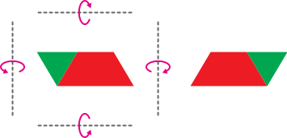

조각의 방향이 반대가 될 것 같습니다.
조각을 위쪽으로 뒤집으면 초록색 조각의 아래쪽에 있던 뾰족한 부분이 위쪽으로 이동할 것 같습니다.
조각을 아래쪽으로 뒤집으면 모양은 그대로이지만 조각의 위쪽과 아래쪽이 서로 바뀔 것 같습니다.
조각을 왼쪽으로 뒤집으면 모양은 그대로이지만 조각의 왼쪽과 오른쪽이 서로 바뀔 것 같습니다.
한 걸음 더
한 걸음 더

조각을 오른쪽으로 뒤집었을 때의 변화를 살펴보세요.
조각의 왼쪽과 오른쪽이 바뀌었습니다.
왼쪽에 있던 초록색 조각이 오른쪽으로, 오른쪽에 있던 빨간색 조각이 왼쪽으로 이동했습니다.